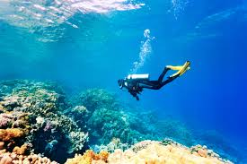
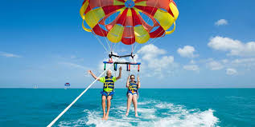
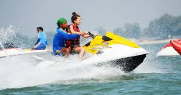
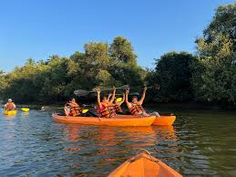
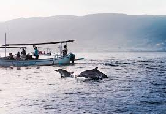

Explore Goa’s vibrant underwater world with scuba diving! Discover coral reefs, tropical fish, and even shipwrecks off the coast of Grande Island and Malvan.

Soar high above the Arabian Sea with a thrilling parasailing ride! Strapped to a parachute and towed by a speedboat, you’ll get breathtaking aerial views of Goa’s beaches like Candolim, Baga, and Calangute.

Feel the adrenaline rush as you speed across the waves on a jet ski! Popular at Baga, Anjuna, and Palolem beaches, this high-speed water sport is perfect for thrill-seekers.

Paddle through Goa’s serene backwaters, mangroves, and hidden lagoons for a peaceful yet adventurous experience.

Set off on a boat trip to spot playful Indo-Pacific humpback dolphins in the Arabian Sea! Tours usually depart from Sinquerim, Cavelossim, or Morjim beaches.
